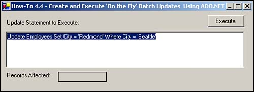

Note
The number of records affected might be different on your system depending on what you have been doing with the Northwind data. |
Sometimes in database applications, you want to create and execute stored procedures that don't currently exist. When you have a situation in which you need to use highly dynamic stored procedures that might use criteria that is entirely created at runtime, you might need to create those stored procedures on-the-fly. This How-To shows you how to create and execute these stored procedures.
It's great that you can execute stored procedures that are already created, but what if you need to generate one at runtime? How do you do this?
To perform this How-To, you will be utilizing the OleDBCommand object, and feeding in the CommandText property from a text box. The text box is set to "Update Employees Set City = 'Redmond' Where City = 'Seattle'" to give you something to start with.
Open and run the VB.NET-Chapter 4 solution. From the main form, click on the command button with the caption How-To 4.4. When the form loads, you will see an example update statement in a text box. Click on the Execute button to execute the update statement. A TextBox control is then displayed on the bottom of the form showing the number of records that are affected. You can the form in Figure 4.3.

Note
The number of records affected might be different on your system depending on what you have been doing with the Northwind data. |
Create a new Windows Form.
Add the following controls, setting the properties as listed in Table 4.6.
|
Object |
Property |
Setting |
|---|---|---|
|
Label |
Name Caption |
Label1 Update Statement to Execute: |
|
Button |
Name |
btnExecute |
|
TextBox |
Name Text |
txtSQL Update Employees Set City = 'Redmond' Where City = 'Seattle' |
|
MultiLine |
True |
|
|
Label |
Name Caption |
Label2 Records Affected: |
|
TextBox |
Name |
txtRecsAffected |
Enter the following code to the Click event btnExecute. When the command is instantiated in this case, the string in the txtSQL text box is passed as the CommandText. The CommandType is set as CommandType.Text. The connection is then open. Finally, the command is executed with the ExecuteNonQuery method, with the ToString passing back the number of records that were affected to the Text property of the txtRecsAffected text box.
Private Sub btnExecute_Click(ByVal sender As System.Object, _
ByVal e As System.EventArgs) Handles btnExecute.Click
Dim ocnn As New OleDb.OleDbConnection(BuildCnnStr("(local)", "Northwind"))
Dim ocmdPhoneUp As New OleDb.OleDbCommand(Me.txtSQL.Text, ocnn)
Try
'-- Specify the name of the stored procedure
ocmdPhoneUp.CommandType = CommandType.Text
'-- Open the connection object.
ocnn.Open()
Me.txtRecsAffected.Text = ocmdPhoneUp.ExecuteNonQuery.ToString
Catch excpData As Exception
MessageBox.Show("Error Occurred: " & excpData.Message)
End Try
End Sub
Tip
Use a Try…Catch…End Try block to trap any exceptions that might occur when working with ADO.NET. In this case, the error is trapped and a message box displays the error. Remember that exceptions that are not trapped will cause the application to fail. |
When a valid SQL statement is entered into the text box with the label Update Statement to Execute: and the Execute button is clicked, the command entered is executed, and the number of records that were affected is returned.
The Command object is a real workhorse when it comes to performing bulk operations, whether working with store procedures already created or when using statements that have been created on-the-fly.